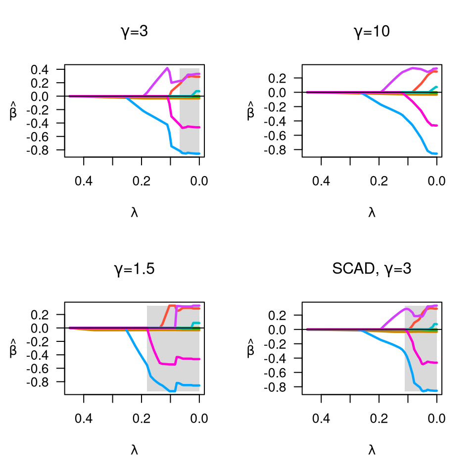
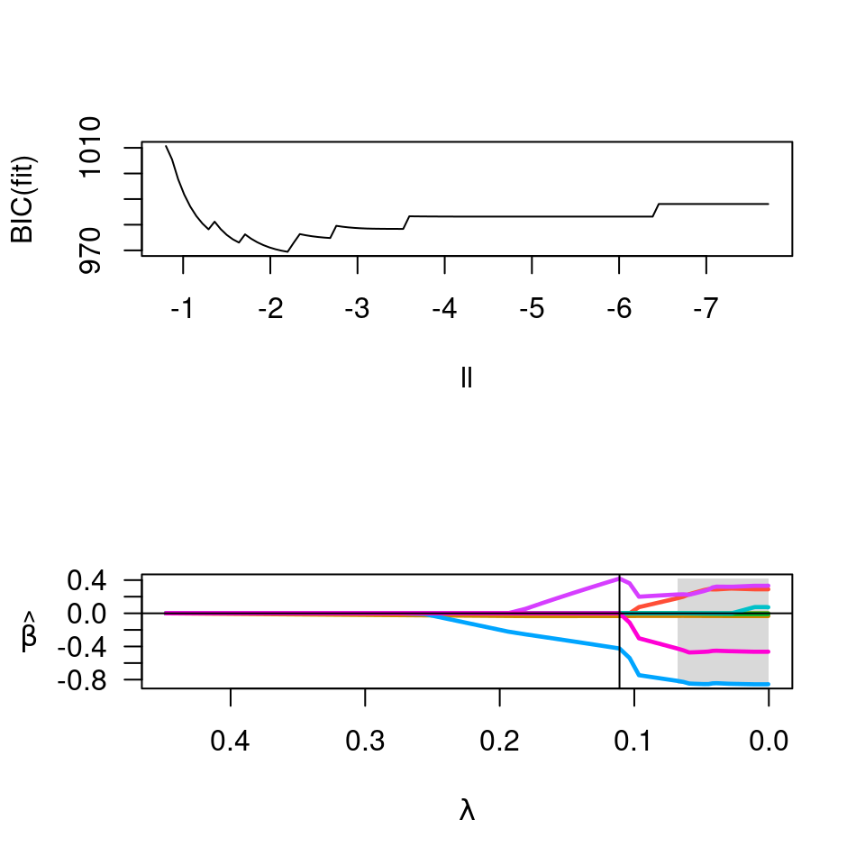
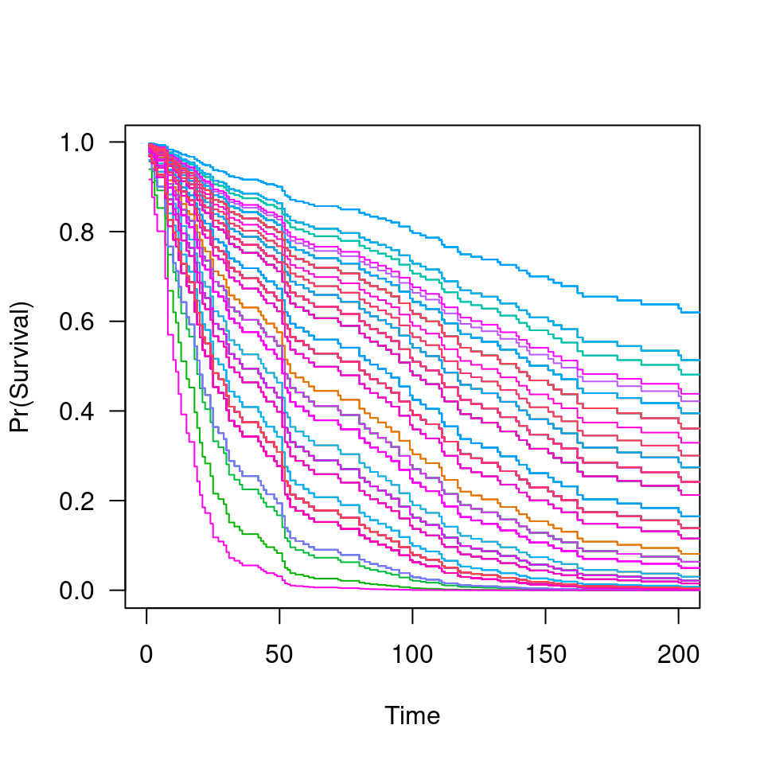

Fit coefficients paths for MCP- or SCAD-penalized Cox regression models over a grid of values for the regularization parameter lambda, with option for an additional L2 penalty.
The design matrix of predictor values. ncvsurv standardizes
the data prior to fitting.
The time-to-event outcome, as a two-column matrix or
survival::Surv() object. The first column should be time on
study (follow up time); the second column should be a binary variable with
1 indicating that the event has occurred and 0 indicating (right)
censoring.
The penalty to be applied to the model. Either "MCP" (the default), "SCAD", or "lasso".
The tuning parameter of the MCP/SCAD penalty (see details). Default is 3 for MCP and 3.7 for SCAD.
Tuning parameter for the Mnet estimator which controls the
relative contributions from the MCP/SCAD penalty and the ridge, or L2
penalty. alpha=1 is equivalent to MCP/SCAD penalty, while
alpha=0 would be equivalent to ridge regression. However,
alpha=0 is not supported; alpha may be arbitrarily small, but
not exactly 0.
The smallest value for lambda, as a fraction of lambda.max. Default is .001 if the number of observations is larger than the number of covariates and .05 otherwise.
The number of lambda values. Default is 100.
A user-specified sequence of lambda values. By default, a
sequence of values of length nlambda is computed, equally spaced on
the log scale.
Convergence threshhold. The algorithm iterates until the RMSD for
the change in linear predictors for any coefficient is less than
eps. Default is 1e-4.
Maximum number of iterations (total across entire path). Default is 1000.
Calculate index for which objective function ceases to be locally convex? Default is TRUE.
Upper bound for the number of nonzero coefficients. Default is no upper bound. However, for large data sets, computational burden may be heavy for models with a large number of nonzero coefficients.
A multiplicative factor for the penalty applied to each
coefficient. If supplied, penalty.factor must be a numeric vector
of length equal to the number of columns of X. The purpose of
penalty.factor is to apply differential penalization if some
coefficients are thought to be more likely than others to be in the model.
In particular, penalty.factor can be 0, in which case the
coefficient is always in the model without any penalization/shrinkage.
Return warning messages for failures to converge and model saturation? Default is TRUE.
Return the standardized design matrix along with the fit? By
default, this option is turned on if X is under 100 MB, but turned off for
larger matrices to preserve memory. Note that certain methods, such as
summary.ncvreg(), require access to the design matrix and may not be able
to run if returnX=FALSE.
Not used.
An object with S3 class ncvsurv containing:
The fitted matrix of coefficients. The number of rows is equal to the number of coefficients, and the number of columns is equal to nlambda.
A vector of length nlambda containing the number of iterations until convergence at each value of lambda.
The sequence of regularization parameter values in the path.
Same as above.
The last index for which the objective function is locally convex. The smallest value of lambda for which the objective function is convex is therefore lambda[convex.min], with corresponding coefficients beta[,convex.min].
The deviance of the fitted model at each value of lambda.
The number of instances.
For Cox models, the following objects are also returned (and are necessary to
estimate baseline survival conditonal on the estimated regression
coefficients), all of which are ordered by time on study. I.e., the ith row
of W does not correspond to the ith row of X):
Matrix of exp(beta) values for each subject over all lambda values.
Times on study.
Failure event indicator.
Additionally, if returnX=TRUE, the object will also contain
The standardized design matrix.
The sequence of models indexed by the regularization parameter lambda
is fit using a coordinate descent algorithm. In order to accomplish this,
the second derivative (Hessian) of the Cox partial log-likelihood is
diagonalized (see references for details). The objective function is
defined to be
$$Q(\beta|X, y) = \frac{1}{n} L(\beta|X, y) + P_\lambda(\beta),$$
where the loss function L is the deviance (-2 times the partial
log-likelihood) from the Cox regression mode. See
here for more
details.
Presently, ties are not handled by ncvsurv in a particularly
sophisticated manner. This will be improved upon in a future release of
ncvreg.
Breheny P and Huang J. (2011) Coordinate descent algorithms for nonconvex penalized regression, with applications to biological feature selection. Annals of Applied Statistics, 5: 232-253. doi:10.1214/10-AOAS388
Simon N, Friedman JH, Hastie T, and Tibshirani R. (2011) Regularization Paths for Cox's Proportional Hazards Model via Coordinate Descent. Journal of Statistical Software, 39: 1-13. doi:10.18637/jss.v039.i05
data(Lung)
X <- Lung$X
y <- Lung$y
op <- par(mfrow=c(2,2))
fit <- ncvsurv(X, y)
plot(fit, main=expression(paste(gamma,"=",3)))
fit <- ncvsurv(X, y, gamma=10)
plot(fit, main=expression(paste(gamma,"=",10)))
fit <- ncvsurv(X, y, gamma=1.5)
plot(fit, main=expression(paste(gamma,"=",1.5)))
fit <- ncvsurv(X, y, penalty="SCAD")
plot(fit, main=expression(paste("SCAD, ",gamma,"=",3)))

par(op)
fit <- ncvsurv(X,y)
ll <- log(fit$lambda)
op <- par(mfrow=c(2,1))
plot(ll, BIC(fit), type="l", xlim=rev(range(ll)))
lam <- fit$lambda[which.min(BIC(fit))]
b <- coef(fit, lambda=lam)
b[b!=0]
#> karno squamous adeno
#> -0.03316393 -0.42452397 0.41834812
plot(fit)
abline(v=lam)

par(op)
S <- predict(fit, X, type='survival', lambda=lam)
plot(S, xlim=c(0,200))
